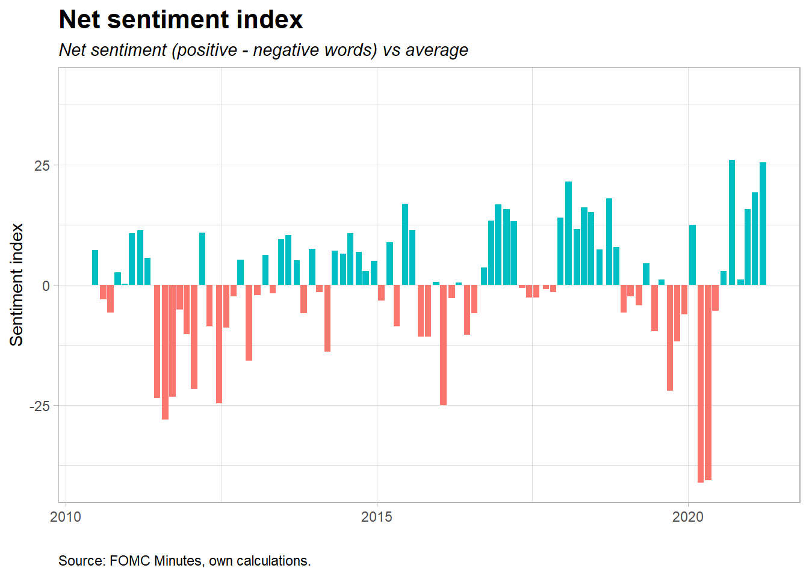

Net sentiment
Net sentiment is calculated by extracting all positive and negative words, and then taking the difference between these divided by the total number of words.

Net sentiment is calculated by extracting all positive and negative words, and then taking the difference between these divided by the total number of words.
Intensifier-index shows the magnitude of the net sentiment by setting positive and negative words in combination with intensifier words (e.g. extremely, significant, sharply etc). 